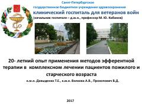

ETKeksa yoshdagi bemorlarni davolashda efferent terapiya usullarini qo'llash tajribasi.
Mazkur kitobda keksa va keksaygan yoshdagi bemorlarni davolashda efferent terapiya usullaridan foydalanishning ko'p yillik tajribasi bayon etilgan. Unda Sankt-Peterburg klinik faxriylar gospitali misolida ekstrakorporal muolajalar va ularning samaradorligi tahlil qilingan.